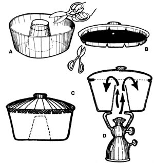
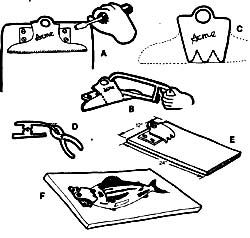
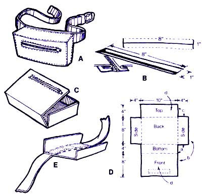
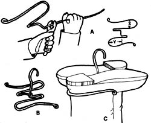
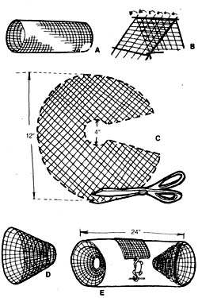

Now - while winter's upon us - is the time to plan for the coming year's warm weather pleasures: camping, fishing, backpacking, and the like. And whether you're a neophyte in the wilds or a seasoned outdoorsman, cold weather musings about such activities bring to mind at least SOME essential camping gear that you don't have but wish you owned.
Well, Russ Mohney - author of MAKE IT AND TAKE IT, a new book on homemade equipment for camp and trail - wants you to fill in those gaps on your own . . . and his book contains simple, illustrated instructions for putting together 40 different rough-it-in-comfort devices. You need only take one look at his text to see that the man makes a good case for some fairly inspired self-sufficiency. (You name the camping necessity, and Russ has a way for you to create it yourself.)
Here, for starters, are five projects from the book. Why not try one or more, just for what Russ Mohney calls the "pure, unadulterated fun" of it? It's never too soon to start gearing up!
From Make it and Take It by russ Mohney, Copyright© 1977 by PacificSearch, Seattle Washington, Reprinted by permission, Available in paperback ($4.95) from any good bookstore or from Mother's Bookstore
There are few outdoor arts that have progressed as rapidly as the business of eating. In the past few decades, we've gone from a bacon-and-beans fare cooked in a cast-iron skillet to such delicacies as turkey tetrazzini fixed in the backpacker's equivalent of a French oven. After a rather short evolutionary period, we have been blessed with every imaginable version of dehydrated, freeze-dried, enriched, and vacuum-packed food. And most require nothing more than a warm breeze to complete the cooking and serving processes.
Although the outdoor gourmet's hardware has also improved, mainly through the development of newer and lighter metals, we are still accustomed to sadly dismissing such culinary delights as fluffy cakes, cinnamon rolls, and the Yankee pot roast as patently out of reach.
But these delectables - and an unending list of others - are suddenly within the realm of possibility! The device that will satisfy our innermost mealtime lusts is the simple backpack oven. To add one to your camping essentials, begin by dropping by the nearest hardware store or thrift shop and securing a ten-inch angel food cake tin and a lid that fits it. (Because of the steep, tapered sides of the pan, you may be forced to adapt a cover that ALMOST FITS.)
Once constructed and then placed over a little backpack stove, this pan and lid will be transformed into an oven capable of baking biscuits, roasts, or angel food cakes. This oven adds an entirely new dimension to camp cookery, and weighs just a tad compared to the benefit it provides. Moreover, it can be assembled in short order for about one-tenth the cost of a comparable commercial model.
A. Make the oven body out of a 10-inch angel food cake tin. Using wire cutters, cut off about one inch from the top of the inside center column.
B. Fit a 10-inch cookware lid to the oven body, being careful not to wedge the lid in too tight. At about two-inch intervals, cut a series of V notches. Tabs will be formed at the same time.
C. Bend the tabs inward until the lid conforms to the angled sides of the cake tin. The form-fitted cover should fit snugly.
D. When using your backpack stove, keep it on low heat, allowing the dry heat to draft up the center column. This also helps to keep the bottom of the pan from burning.
When I first started filleting fish, I found that the simple procedure shown in the handbooks was anything but simple. Instead of whisking away a couple of perfect boneless fillets, I usually reduced the slippery little creatures to a state variously described as shredded asbestos, skinny scallops, or wet linen lace. If I did manage to carve a reasonable little fillet, it was either at the cost of around eighty percent of the original fish or several injured fingers, depending on whether I attempted frugality or safety.
One summer, in the midst of my frustration, I happened to go fishing with an almost retired commercial fisherman named Ed Brown. His mastery of filleting was exceeded only by his colorful vocabulary and legendary prowess at sea. In moments, Ed could transform a flopping, bucket-mouthed lingcod into a pile of the most beautiful, pure white fillets ever seen by man. The difference in his technique and mine (quite beyond the obvious difference between experience and novice enthusiasm) seemed to be only the board that firmly held his fish during the operation. In short order, I learned that a good filleting board was infinitely superior to holding the wriggling fish between my knees!
The fillet board consists of only a board and a clamp. The board serves as a platform that keeps the clamp - and subsequently the fish - in a stable position for dressing.
Since most of us are going to be filleting the occasional bass and rockfish that we land, the board need not be a large one. Most of us can get by nicely with about an inch-thick, 24-inch-long fillet board. (The added weight of a fairly thick board helps keep your slippery quarry in the same county as you during the filleting operation.) DO NOT PAINT OR VARNISH THE BOARD. It is better to occasionally replace the wooden part of your device than risk potentially dangerous paint chips in your dinner!
The clamp is a spring set of laws that holds the beast in place while the dark deed is done. The standard office clipboard (with a good, strong spring) is ideal for fashioning into a nifty clamp.
This is another of those really simple devices that makes the whole outdoor business a lot more fun.
A. Remove the clip from a standard office supply clipboard.
B. With a hacksaw, remove the wide wings on either side.
C. Then saw notches into the face of the clip to create three or four teeth.
D. Bend the teeth into a slight downward curve in order to better secure the fish on the finishing board.
E. Mount the newly formed clamp onto a solid board about 12 X 24 inches.
F. To use, just clip the fish onto the board, and use BOTH hands to cut away the boneless fillets!
The more genteel among us will undoubtedly refer to this simple little day pack as a belt pack, but this is the same gang that refers to underwear as "unmentionables"! As I do not belong to that group, it will be called here, as it ought to be, "the fanny pack".
The design of this particular fanny pack is about as straightforward and logical as it can be. Although there are many exotic designs on the market, a box belt pack is the easiest to make and the most efficient for day hiking. The pack body consists of a nylon box that is large enough to carry a lunch, camera, first-aid kit, or any of the other paraphernalia you ordinarily take on a short hike from a base camp. Because the fanny pack is not expected to carry a particularly heavy load, a light nylon web is strong enough to be used for the belt (an adjustable buckle is attached to it). Just below the top cover, the pack closes with a nylon zipper, which will not corrode.
This pack is my favorite way of carrying gear on the short day hike. It is less tiring than even a small backpack, is easier to get things out of, and is out of the way during a rest stop.
A. Make the entire body of the pack from one-half yard of coated, waterproof nylon cut to the dimensions shown in Fig. D.
B. Before sewing anything, cut the inch zipper hole by merely slitting the material two inches below the edge of the top cover and cutting two one-inch T's on each end. Fold the flaps under in order to install the zipper, as shown. Make sure the zipper is installed so the seams and edging will end up inside the finished bag.
C. Fold the material to form the box shape. (For simplicity, this illustration shows the box right side out.)
D. Now sew the basic box in the following order. Use plain seams on all edges.
1. Sew the bottom edges to the short side edges (a).
2. Sew the front edges to the long side edges (b).
3. Sew the top edges to the short side edges (c).
4. OPEN THE ZIPPER.
5. Sew the top edge to the front edge (d).
6. Push the complete bag through the open zipper. Be persis tent until you have the bag right side out and the zipper works.
E. Sew the pack to a lightweight nylon web belt (its length is determined by your circumference) that has an adjustable buckle. Spread the zipper as wide as possible and sew the back of the bag to the belt.
This is one of those simple little devices that really does a good job, takes only a dime's worth of wire, and can be made in a matter of minutes.
The hanger is bent from wire in such a manner that it adapts to almost any boot and also folds flat for carrying. The boots hang sale upward, allowing the moisture inside to evaporate quickly and naturally. When drying hiking boots this way, be sure to keep them away from direct heat, even that of the campfire. Nothing will age or damage the material faster than overdrying after a thorough soaking, so use a little patience when drying your shoes and boots. They'll last a lot longer and serve you better while they're around.
A. Make the hanger by bending three feet of wire. Be sure that dimension X on each side is narrow enough to grip each boot firmly, and that dimension Y is equal on each side for proper balance.
B. For a hanger, fashion a wire hook out of a short piece of wire.
C. Make the clamping loops of the hanger narrow enough to fit below the heal reinforcements of your boots so that the soles are held upright.
The best crawdaddy bait is NOT - contrary to popular misconceptions - a chunk of well-seasoned fish. I have found crawfish to be pretty fussy eaters, and they greatly prefer a fresh fish to almost anything else. In an effort to be consistent and characteristically cheap, I usually bait my traps with a small tin of fish-flavored cat food. I punch a few holes in either and to lot the wildly appealing odor (to a crawfish, at least) wash into the water to attract my quarry.
Once you're ready to fish, weight the trap down with a couple of hefty rocks or anything else that will make it sink. It's imperative, of course, that you tie a rope to the whole affair before you toss it overboard, unless you cherish the thought of swimming after it!
The weighted, baited trap can then be tossed into water practically anywhere, just as long as the water is relatively pollution-free. Crewfish live in almost every body of fresh or brackish water in North America, so keep looking until you find a hot spot. The trap is usually left overnight in order to catch the bigger crawfish, which are mainly nocturnal feeders.
When you bring in your catch, thoroughly rinse them, and then pop them into salted, boiling water for about five to seven minutes, after which they will be bright red and quite dead. Break off the tells, and peel and devein them. Eat the 'dads as is or add them to almost any kind of seafood dish you like. Many people also eat the comparatively small but delicious bits of meat in the claws, a morsel that is usually referred to as "nectar" by crawfish devotees. It is a rare and delicate feast. When this trap is so easy to build and use, it's incredible that the rewards from using it can include some of the finest eating to be found anywhere.
This cylindrical trap is constructed of hardware cloth, a rather folksy name for one-half-inch mash galvanized wire. The hardware cloth can be purchased at almost any store bearing the same name and is relatively inexpensive. It's different from most other wires because - when you cut a piece of it with tin snips - little pieces of stiff wire protrude every half-inch along the fresh cut. These little wires are the means by which two pieces of hardware cloth are joined. Push the little wires through the solid wire on the edge of the other chunk of cloth (see illustration) and then bend them around the uncut wire like hinges.
A. To make the body of the trap, take a 20 X 24-inch piece of hardware cloth and roll it into a cylinder. The diameter of the cylinder is eight inches.
B. Connect the ends of the hardware cloth where they meet on the cylinder by pushing the cut wires of one end through a complete course of wire squares on the other and. Fold the cut wires back onto the first end, as shown.
C. To make the tunnels, cut the cloth into a large circle (at least 12 inches in diameter for an eight-inch cylinder). Next cut a smaller inner circle about four inches in diameter.
D. Join the two sides of the tapered cut and you have a tunnel. Overlap the two edges to adjust for the proper size. Wire the tunnel closed and trim off all protruding wires. Wire the tunnel to the cylinder.
E. Cut a six-inch-square access door along the side of the tunnel. Connect the upper edge of the door to form a hinge using the same method as described in instruction B. You can fasten it with any wire hook or rubber arrangement.
|
 |
 |
 |
|
 |
 |
|